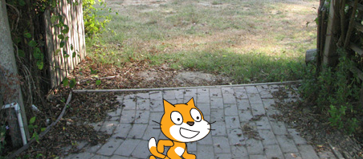

Scratch is an online programming site that allows the user to create animations, games, or stories using scripts and code.
8/23/16

-
This was our very first scratch project in class. It's goal was to have a cut out picture of your face, and turn it into something creative. Click the image to download it.
9/7/16
-
This was a project that was made in partners that had us chose from four different types of "themes" (Art, Story, Game, Educational) and make a scratch project bassed off of your theme. Click "here" to download our backlog.